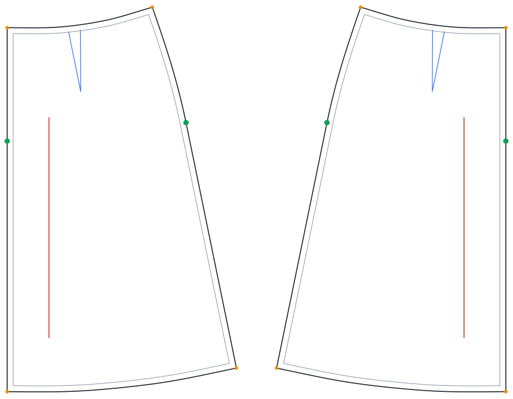

全体の流れ
型紙は、線を描いて 1 枚ずつまとめ、線に役割を付けてから書き出します。展開（切り開き）は必要なときだけです。
1はじめる
インストールは要りません。index.html を Chrome か Edge で開くだけで動きます。
apparel-cadフォルダーのindex.htmlを、Chrome か Edge の画面へドラッグする- 左上に「アパレルCAD ver ○」と出れば準備完了。番号が古いままなら Ctrl+F5
- はじめてなら、右上の 「見本を開く」（①）を押す。タイトスカートの前・後ろ（半身）が出ます
- 1見本を開く
- 2型紙パネル：線の役割・名前・枚数・切り開き・書き出しは全部ここ
- 3ツール（イラレと同じ並び）
- 4作業する紙（アートボード）
保存
Ctrl+S で .icad（このアプリの形式）に保存します。線の役割や名前もそのまま残ります。作業中の内容はブラウザにも自動で残りますが、大事な型紙は必ず保存してください。作り直したときは 前スカート_v2 のように番号を付けて保存すると安心です。
2型紙の各部の名前
このアプリでは、型紙の線それぞれに「役割」を付けます。役割ごとに、書き出したときの扱いが変わります。
| 役割 | 意味 | DXF では |
|---|---|---|
| 輪郭（裁断線） | 布を裁つ線 | 画層 1 |
| 縫い線 | 縫い合わせる線 | 画層 14 |
| 内部線 | ダーツなど、型紙の中の線 | 画層 8 |
| 布目線 | 型紙を置く向き | 画層 7 |
| ノッチ（合印） | 縫い合わせる位置の印 | 画層 4 |
| 切り開き線 | 展開するときに切る線（作図用） | 書き出さない |
| 自動 | 決めていない線 | いちばん大きい閉じた線が輪郭、ほかは内部線 |
3線を描く
描き方はイラレと同じです。縫い線・輪郭はペン、布目線とノッチは直線で描きます。
- 1ペンツール（P）
- 2ドラッグすると曲線になる（ウエストの丸み）
- 3最後に始点に重ねると「アンカー」と出る。ここをクリックして閉じる
| 描くもの | 道具 | こつ |
|---|---|---|
| 縫い線・輪郭 | ペン P | クリックで角、ドラッグで曲線。最後に始点をクリックして閉じる |
| ダーツ | ペン P | 山形に 3 点。閉じなくてよい |
| 布目線 | 直線 \ | 布のたて糸の向きに 1 本。Shift でまっすぐ |
| ノッチ | 直線 \ | 輪郭の上から内側へ 5mm ほど |
閉じるときに始点から少しでもずれると、閉じずに線が続きます。そのときは Ctrl+Z。
4型紙にまとめる
1 枚の型紙の線をグループにし、線ごとに役割を付け、名前と枚数を入れます。
- 選択ツール（V）で 1 枚分の線を全部選び、Ctrl+G。1 つのグループが 1 枚の型紙になります
- ダイレクト選択（A）で線を 1 本クリックし、型紙パネルの「線」で役割を選ぶ
- 型紙の中の線をどれか選んだまま、「名前」と「枚数」を入れる（例：袖なら左右で 2）
- 1ダイレクト選択（A）でクリックした線。縫い線が青く選ばれる
- 2線の役割。ここでは「縫い線」
- 3パーツ名（DXF にそのまま渡る）
- 4裁断する枚数
5切り開き（タイトスカート → フレアスカート）
型紙に線を入れて切り、扇のように開いて裾を広げます。見本では、切り開き線 2 本を 60mm ずつ開くと、裾が 245mm から 365mm になります。
① 切り開き線を引く
- 直線ツール（\）で、裾からウエストへ向けて線を引く。引き始めが「開く側」、引き終わりが「支点」になります
- 引いた線の「線」を 切り開き線 にする。オレンジの線に変わります
- 何本でも引けます。ダーツにはかからないようにします
- 1直線ツール（\）で引いた切り開き線。裾の端は縫い線の上に置く（1.5cm まで離れていても自動で乗せる）
- 2線の役割を「切り開き線」に
② 開く量を入れる
- 選択ツール（V）で型紙をクリックして選ぶ
- 型紙パネルの 「切り開き…」 を押す
- 開く量（1 本あたり、裾で何 mm 開くか）と 縫い代 を入れる。「プレビュー」で形を見てから OK
- 1切り開き…
- 2開く量（mm・裾で）
- 3縫い代（mm）。輪郭はこの幅で作り直す
- 4プレビュー
- 5OK（やり直しは Ctrl+Z）
③ できあがり
- 縫い線を切り開き線で区切り、ウエスト側の支点を中心に回して開きます。布目線のある区画（中心側）は動きません
- 開いた裾と支点のところは、なめらかな曲線につなぎ直します。ウエストの長さは変わりません
- 輪郭は、新しい縫い線から縫い代の幅で作り直します。角は線を延ばして交わる点でとがらせます
- ダーツ・布目線・ノッチは、のっている区画といっしょに動きます。切り開き線は使い終わると消えます
6DXF に書き出す
青い「AAMA DXF 書き出し」を押すと、型紙が全部 1 つの .dxf（単位 mm）にまとまります。
- 1合印：ふつうは「点」。うまく出なければ「線」
- 2文字：ふつうは「Shift_JIS」。名前が化けたら「UTF-8」
- 3AAMA DXF 書き出し

保存先を聞かれたら選びます。聞かれないときは、ダウンロードフォルダーに ファイル名_AAMA.dxf ができます。
7CREACOMPO II で開く
書き出した .dxf を CREACOMPO II の画面にドラッグ＆ドロップします（つなぎ方は非公式です）。
- CREACOMPO II を起動する
.dxfを画面にドラッグ＆ドロップする- 下の点を確かめ、結果を記録しておく（スクリーンショットがあると、あとで直すときに役立ちます）
| 確かめること | 見本での答え |
|---|---|
| 型紙が枚数どおりに分かれているか | 前スカート・後ろスカートの 2 枚 |
| 寸法が合っているか | タイトスカートの前の輪郭：幅 265mm・丈 約620mm |
| ノッチ・縫い線・ダーツ・布目線が出ているか | ノッチは腰の高さ（脇と中心） |
| パーツ名と枚数が読めるか | 前スカート・後ろスカート、各 1 枚 |
試し用のファイルは apparel-cad\samples にあります。まず 型紙テスト_v1_A_標準.dxf を試し、うまくいかなければ B〜D（ノッチを線で／日本語名 Shift_JIS／日本語名 UTF-8）を試してください。
困ったとき
| こんなとき | こうする |
|---|---|
| ペンの線が閉じずに続いてしまった | Ctrl+Z で戻し、始点に重ねて「アンカー」と出たらクリック |
| 線が見えなくなった | 塗りが白で重なっている。全部選んで「塗り」をなしに。Ctrl+Y（アウトライン）でも確かめられる |
| 役割が全部の線に付いた | 選択ツール（V）で選んでいた。Ctrl+Z で戻し、ダイレクト選択（A）で付け直す |
| 「切り開き線がありません」と出る | 引いた直線の「線」を「切り開き線」にしたか確かめる |
| 「縫い線から離れすぎています」と出る | 切り開き線の両端を、縫い線から 1.5cm 以内に置く |
| 切り開いた形がおかしい | Ctrl+Z。切り開き線は裾からウエストへ引き、ダーツにかけない |
| タイトルの版（ver）が古い | Ctrl+F5 で読み込み直す |
| CREACOMPO II で名前が文字化けする | 「文字」を UTF-8 にして書き出し直す |
ショートカット
イラレと同じです。全部の一覧はアプリの「ショートカット一覧」（F1）にあります。
| キー | できること | キー | できること |
|---|---|---|---|
| V | 選択（グループごと） | Ctrl+G | グループ（1 枚の型紙に） |
| A | ダイレクト選択（1 本ずつ） | Ctrl+Z | 元に戻す |
| P | ペン | Ctrl+Shift+Z | やり直し |
| \ | 直線 | Ctrl+S | 保存 |
| M / L | 長方形 / 楕円形 | Ctrl+O | 開く |
| R / O / S | 回転 / リフレクト / 拡大・縮小 | Ctrl+0 | 全体を表示 |
| Space＋ドラッグ | 画面を動かす | Ctrl+Y | アウトライン表示 |
用語集
| 言葉 | 意味 |
|---|---|
| 型紙（パターン） | 服の各部分の形をうつした紙。これに合わせて布を裁つ |
| 原型 | 体の形に合わせた、飾りのない基本の型紙 |
| パターン展開 | 原型を切ったり開いたりして、デザインの型紙を作ること |
| 切り開き | 型紙に線を入れて切り、扇のように開いて広げる展開 |
| 縫い線（でき上がり線） | 縫い合わせる位置の線 |
| 縫い代 | 縫うために縫い線の外側に付ける余白 |
| 輪郭（裁断線） | 縫い代も含めた、布を裁つ線 |
| ダーツ | 体の丸みに合わせて布をつまむ、三角の部分 |
| ノッチ（合印） | 縫い合わせる 2 枚の位置を合わせるための切り込み |
| 布目線（地の目） | 布のたて糸の向き。型紙を置く向きを示す |
| グレーディング | M サイズの型紙から S・L などを作ること（これから作る機能） |
| AAMA DXF | 型紙データの業界標準の形式。型紙CAD どうしのやり取りに使う |
| 画層 | DXF の中で線の種類を分ける番号（輪郭は 1、ノッチは 4 など） |